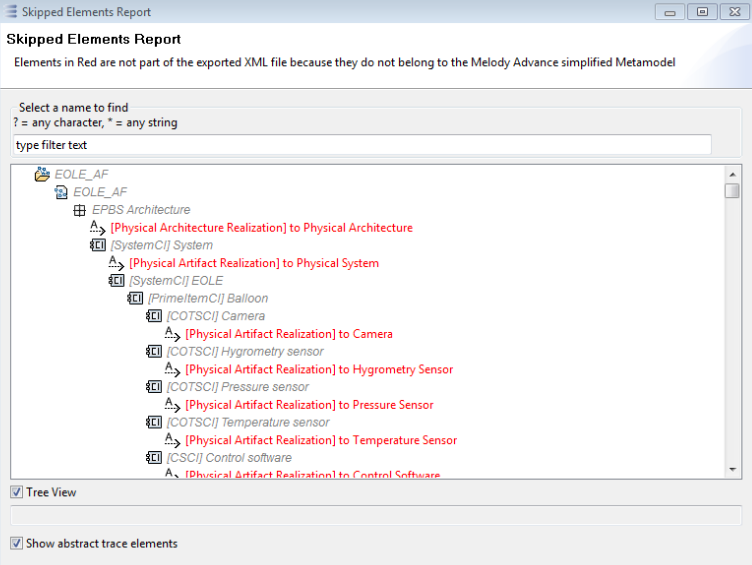
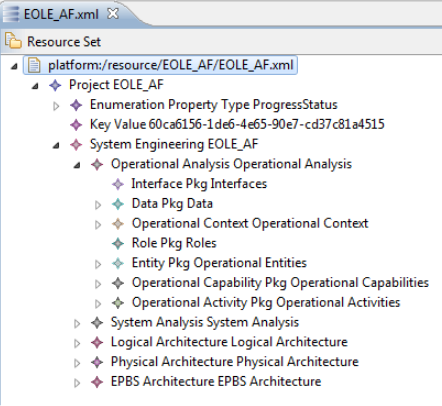
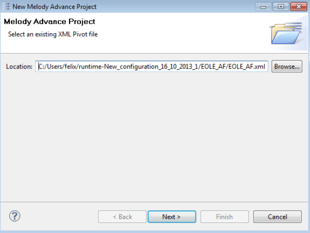

The XML Pivot functionality is not integrated by default in Capella. This addon is available for download on the Capella website.
|
|
The XML Pivot functionality is not integrated by default in Capella. This addon is available for download on the Capella website. |
To export a model or parts of a model select the elements to be exported in the Capella Project Explorer, open the context menu and select “Pivot XML -> Export”.
This will open a file dialog which allows choosing the destination file for the export. Press OK in the file dialog to continue the export. After the export completes, a status dialog shows the elements that have been excluded from the export because they do not form part of the Capella simplified metamodel.

It is possible to hide all trace elements from the dialog by deselecting the checkbox “Show abstract trace elements”. The elements in this list are also shown in the Information view in order to conserve the report even after the dialog is closed. After closing the dialog, the export tool offers to open the exported xml file in an editor.
After confirmation, a basic editor allows to inspect the export result:

It is also possible to modify the export result via the Properties View. If the Properties View is not open, you can open it by selecting “Show Properties View” in the context menu of any element in the Editor.
It is possible to export a Capella model with the Capella headless command-line application. The command to run an export in headless mode is:
eclipse.exe -consoleLog -application org.polarsys.capella.core.commandline.core -appid xmlpivot.export -filePath <Path>
The filePath argument may either be a relative or an absolute path. If it is a relative path, it is interpreted relative to the workspace. To specify an explicit workspace, you can use an additional parameter:
eclipse.exe –data <Path to Workspace> -consoleLog -application org.polarsys.capella.core.commandline.core -appid xmlpivot.export -filePath <Path>
Examples:
eclipse.exe -consoleLog -application org.polarsys.capella.core.commandline.core -appid xmlpivot.export -filePath C:/EOLE_AF/EOLE_AF.melodymodeller
eclipse.exe -consoleLog -application org.polarsys.capella.core.commandline.core -appid xmlpivot.export -filePath EOLE_AF/EOLE_AF.melodymodeller
Note that the export also creates an additional project “Simplified Capella Metamodel” in the workspace. This project will contain .ecore (Similar to XML Schema) definitions of the simplified Capella Metamodel. This project should not be deleted, as it is required to open the exported model in the basic editor, or any other EMF based tool that has to load the exported model. To share your exported model with others, always share the “Simplified Capella Metamodel” project too.
It is possible to initialize a new Capella project from a simplified Capella model: Open the Capella Project explorer context menu and select “New -> Capella Project from XML Pivot”. This will open the Capella Project Wizard with an additional step that allows selecting the source .xml file:

TIP: IF THE SOURCE .XML FILE IS INSIDE THE CAPELLA WORKSPACE, YOU CAN SELECT THE .XML FILE AND THEN OPEN THE WIZARD. THIS WILL AUTOMATICALLY SET THE LOCATION FIELD TO THE PATH OF THE PREVIOUSLY SELECTED FILE.
After filling out the remaining steps of the Capella Project Wizard click “Finish” to create the project.
It is possible to import a simplified Capella model and merge it directly into an existing Capella project. To merge such a model, select its .xml file in the Capella Project Explorer and select “Pivot XML -> Merge with existing Capella Project”. These commands will import the source .xml file and open the interactive Capella Diff/Merge editor.
The XMLPivot tool comes with automatic support for metamodel extensions provided through viewpoint addons. During export, all required external viewpoint metamodels are transformed automatically into a corresponding meta model that is compatible with the simplified Capella meta model. The .ecore file for the simplified viewpoint meta model is then stored inside the “Simplified Capella Metamodel” project, alongside the simplified Capella meta model .ecore files.
The following sections are of interest for XML Pivot developers.
The plugin org.polarsys.capella.core.semantic.data.gen contained generated EMF code for the simplified Capella metamodel. This code is not needed by the XML Pivot addon and was removed from XML Pivot in version 1.1.0. The following two steps show how developers can generate this code for their own projects:
The semantic metamodel generation application is a capella command line application that creates all required .ecore and .genmodel files. The following command runs this application from a command line:
C:\capella>capella.exe -data C:\workspace -application -appid org.polarsys.capella.xmlpivot.commandline.m2extraction
This will create a project org.polarsys.capella.core.semantic.data.gen in the specified workspace (in this example C:\workspace)
Launch capella and switch to the workspace that contains the generated project, open the CapellaModeller.genmodel file and select "Generate Model Code" from the context menu.